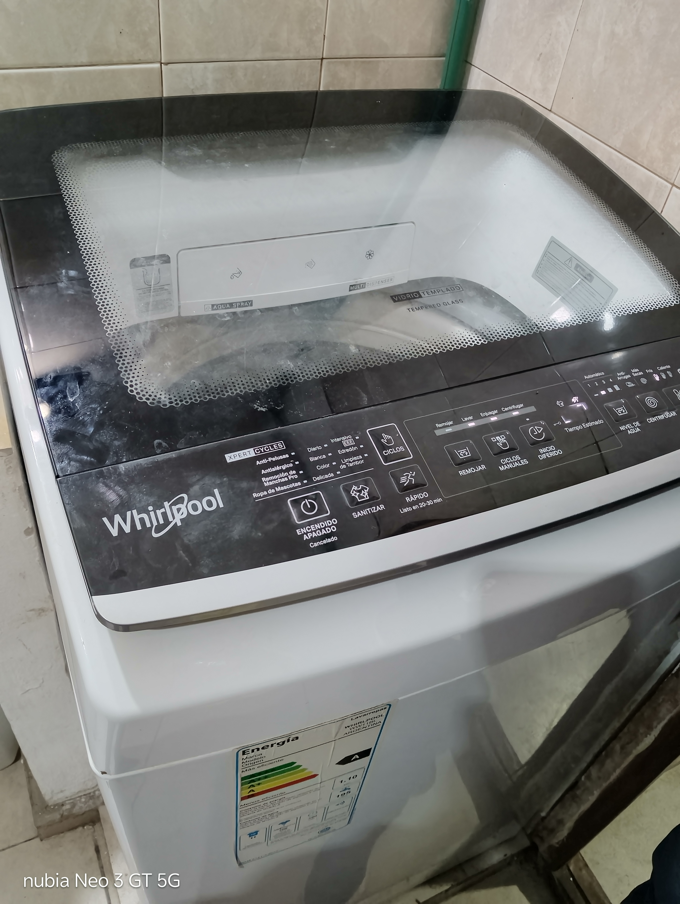

Brindamos solución rápida y garantizada para lavarropas automáticos y semiautomáticos a domicilio en todo Mar del Plata.
Coordinamos un horario para acudir a tu domicilio y revisar el equipo en su lugar.
Inspeccionamos la falla (ruidos, pérdidas de agua, errores de centrifugado, placas quemadas, etc.).
Te informamos el costo total especificando el valor de la mano de obra y el precio del repuesto.
Reparamos todas las marcas y modelos nacionales e importados en Mar del Plata:
Consulta por disponibilidad de visita y solicita tu diagnóstico hoy mismo.
Consultar por WhatsApp 📱Trabajo de reparación realizado en Mar del Plata:
